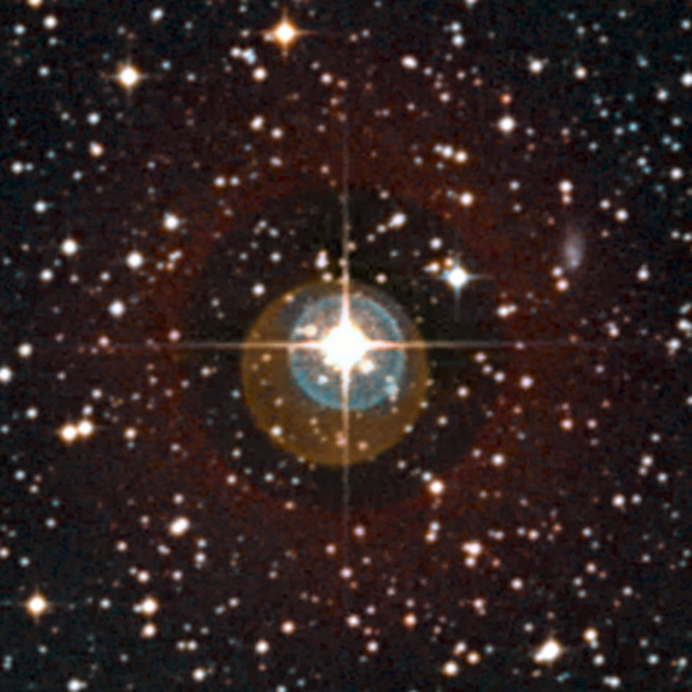
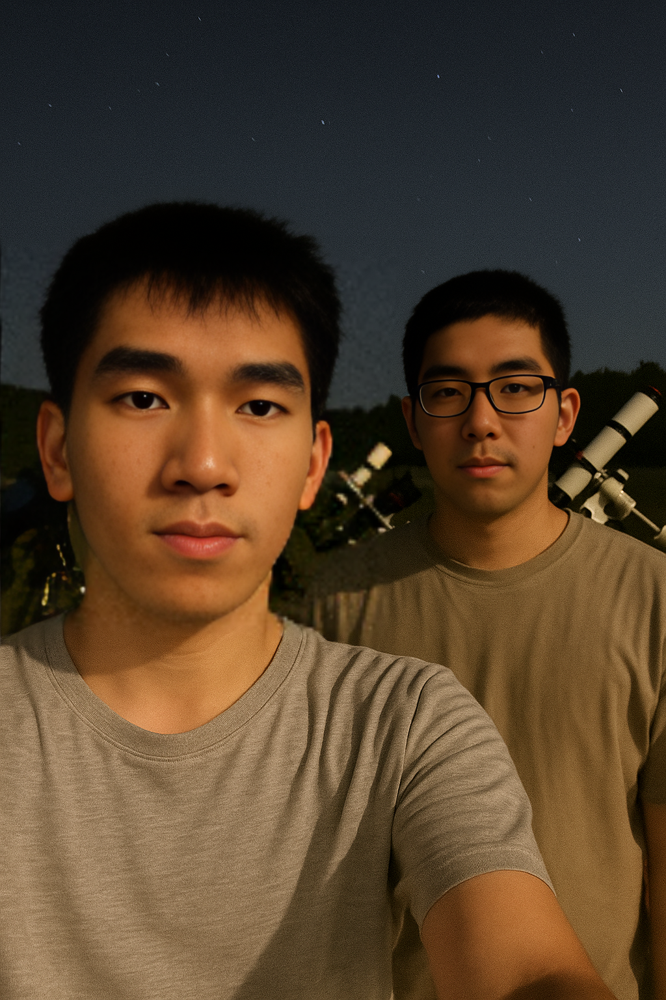

在浩瀚星空之下，18岁的高中生 黄泰鑫 同学，用一颗探索宇宙的赤诚之心和一台普通的天文摄像机，成功捕捉到了一颗前所未有的天体！他的发现不仅震惊了业余天文爱好者圈子，更获得了中国科学院紫金山天文台的高度认可，并被授予“全国优秀业余天文学奖”这一殊荣。
以下图像是由黄泰鑫同学使用远程自动望远镜拍摄到的全新天体。该天体位于金牛座，亮度极低，在连续曝光与数据叠加处理后才清晰显现。这是中国青少年首次独立确认的深空天体之一。
图：黄泰鑫发现的金牛座新天体图像（图像为堆叠合成，已提交 IAU 命名审核）。
这颗新天体位于金牛座区域，亮度极低，容易被忽略。然而黄泰鑫同学通过连续数晚的观测和数据比对，准确锁定了它的存在，并提交给了权威机构进行验证。最终确认，这是一次真正属于中国青年的天文发现。
“我没有太多高端设备，也不是专业出身，但我喜欢看星星，也相信只要坚持，总会看到不同的宇宙光。”——这是黄泰鑫的原话。他的谦逊、执着和热爱，激励了无数人。“同时，我准备用我朋友的名字命名这颗行星，因为他在我最困难的时候帮助了我。”
作为“全国优秀业余天文学奖”获得者，黄泰鑫同学被多家权威媒体专题报道。下图为其事迹刊登于《科学少年》杂志及新华网联合推送的专题页面截图。
图：新华社专题报道截图，展示其观测记录及天文台授奖现场画面。
紫金山天文台对此表示高度赞赏，并指出：“我们始终鼓励青少年参与科学探索。黄同学的表现证明了，科学没有年龄之分，只有好奇心与坚持。”紫金山天文台台长亲自给黄同学写信祝贺，并专门对黄同学开放了天文台的观测权限。
目前，该新天体已提交国际天文学联合会命名审核程序，未来有望被正式载入星图。与此同时，紫金山天文台也向全社会发出邀请：加入我们，一起探索宇宙的奥秘！
了解更多关于紫金山天文台的科研工作与公众活动，请访问我们的官方网站： 紫金山天文台官网